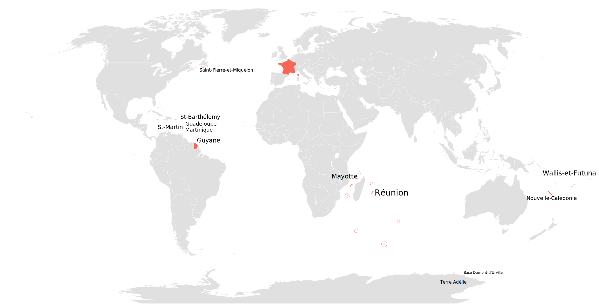

class: cover background-image: url(images/watch.jpg) # Manipulating Time in Elm --- # Who am I? <img src="images/vbilley.jpg" style="position: absolute; top: 30px; right: 30px; border-radius: 10px;" /> ### Vincent Billey ### Developer [@Synbioz](https://twitter.com/synbioz)  ### @Fenntasy on [Twitter](https://twitter.com/Fenntasy) and [Github](https://github.com/Fenntasy) --- class: cover background-image: url(images/time-is-complex.jpg) background-size: 100% ## Time is complex --- class: cover background-image: url(images/plank-time.jpg) background-size: contain background-position: center ## Just ask theoritical physicists --- # Dates are confusing -- ## What is the first day of the week? -- ## What year is it by the way? --- # Timezones are worse -- ## You think you know about them? --- class: cover background-image: url(images/australia.png) background-size: contain background-position: center --- class: cover background-image: url(images/australia2.png) background-size: contain background-position: center --- class: cover background-image: url(images/australia3.png) background-size: contain background-position: center --- class: cover background-image: url(images/australia4.png) background-size: contain background-position: center --- class: cover white  --- # But how does Elm manage this? -- ~~~javascript // core/src/Native/Date.js function fromString(str) { * var date = new Date(str); return isNaN(date.getTime()) ? _elm_lang$core$Result$Err('Unable to parse \'' + str + '\' as a date. Dates must be in the ISO 8601 format.') : _elm_lang$core$Result$Ok(date); } *fromTime: function(t) { return new Date(t); }, ~~~ --- > For all the talk about performance in the JS ecosystem. > Few will blame you for using moment. -- ### 21 kb for moment -- ### 68 kb if you add locales -- ### between 3 and 26 kb if you want timezone support --- class: cover background-image: url(images/help.jpg) background-size: cover ## That being said, Elm will help you! --- # Months are a Union Type ~~~elm type Month = Jan | Feb | Mar | Apr | May | Jun | Jul | Aug | Sep | Oct | Nov | Dec ~~~ --- ### `fromString : String -> Result String Date` -- ~~~elm import Date exposing (Date) type alias Model = { myDate = Date } update : Msg -> Model -> ( Model, Cmd Msg ) update msg model = case msg of UserHasEnteredDate dateString -> case Date.fromString dateString of Ok date -> ( { model | myDate = date }, Cmd.none ) Err error -> Debug.crash error ~~~ --- ### `now : Task x Date` -- ~~~elm import Date exposing (Date) type alias Model = { currentDate = Maybe Date } init : ( Model, Cmd Msg ) init = ( initModel , Date.now |> Task.perform CurrentDate ) update : Msg -> Model -> ( Model, Cmd Msg ) update msg model = case msg of CurrentDate today -> ( { model | currentDate = Just today }, Cmd.none ) ~~~ --- class: cover background-image: url(images/community.jpg) ## And the community is here to help --- ## rluiten/elm-date-extra -- ### Creation -- ~~~elm import Date exposing (Month(..)) import Date.Extra.Create exposing (dateFromFields) lilleFPStart = dateFromFields 2017 Feb 23 18 45 0 0 lilleFPEnd = dateFromFields 2017 Feb 23 23 59 59 0 ~~~ --- ## rluiten/elm-date-extra ### Comparison -- ~~~elm import Date exposing (Month(..)) import Date.Extra.Create exposing (dateFromFields) import Date.Extra.Compare exposing (is, Compare2(..)) lilleFPStart = dateFromFields 2017 Feb 23 18 45 0 0 lilleFPEnd = dateFromFields 2017 Feb 23 23 59 59 0 isBefore : Bool isBefore = is Before date1 date2 ~~~ --- ## rluiten/elm-date-extra ### Translation -- ~~~elm import Date exposing (Month(..)) import Date.Extra.Create exposing (dateFromFields) lilleFPStart = dateFromFields 2017 Feb 23 18 45 0 0 currentDate : String currentDate = format config "%A %d %B %Y %H:%M" lilleFPStart -- Jeudi 23 Février 2017 18:45 ~~~ --- ## rluiten/elm-date-extra ### Duration ~~~elm import Date exposing (Month(..)) import Date.Extra.Create exposing (dateFromFields) import Date.Extra.Duration exposing (diff) lilleFPStart = dateFromFields 2017 Feb 23 18 45 0 0 elmEuropeStart = dateFromFields 2017 Jun 8 8 30 0 0 timeToElmEurope : Date.Extra.Duration.DeltaRecord timeToElmEurope = diff lilleFPStart elmEuropeStart -- { year = 0, month = -3, day = -12 -- , hour = -13, minute = -45, second = 0 -- , millisecond = 0 -- } ~~~ --- ## rluiten/elm-date-extra > Please be warned that there are many ways to manipulate dates that produce basically incorrect results. --- ## elm-community/elm-time -- ### when you need the big guns -- ### Pure Elm dates and time with Records -- ### Kind of the same tools -- ### No translation though --- ## Creation ~~~elm import Time.Date exposing (date) date = date 1992 2 28 -- Date { year = 1992, month = 2, day = 28 } : Date ~~~ -- ## Manipulation ~~~elm import Time.Date exposing (date, addMonths) date = date 1992 2 28 |> addMonths 2 -- Date { year = 1992, month = 4, day = 28 } : Date ~~~ --- ## Comparison ~~~elm import Time.Date exposing (date, compare) date1 = date 1997 5 15 date2 = date 2005 7 18 result : Order result = compare date1 date2 -- LT ~~~ --- ## DateTime ~~~elm import Time.DateTime exposing (dateTime) dateTime zero -- 0-01-01T00:00:00Z dateTime { zero | year = 2016 } -- 2016-01-01T00:00:00Z dateTime { zero | year = 2016, month = 5, day = 29, hour = 13 } -- 2016-05-29T13:00:00Z ~~~ --- ## Timezone ~~~elm import Html exposing (text) import Time.TimeZones exposing (europe_paris) import Time.ZonedDateTime exposing (zonedDateTime, zero, toISO8601) main = let timezone = europe_paris () date = zonedDateTime timezone { zero | year = 2017 , month = 2 , day = 23 , hour = 16 } in text <| toISO8601 date -- 2017-02-23T16:00:00+01:00 ~~~ --- # Takeaways -- ## Don't ignore time zones when building apps -- ## Don't trap yourself with built-in Dates -- ## Look at Elm Native code --- class: cover background-image: url(images/watch.jpg) ## Questions?